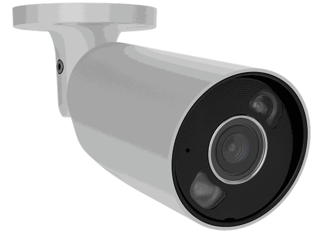
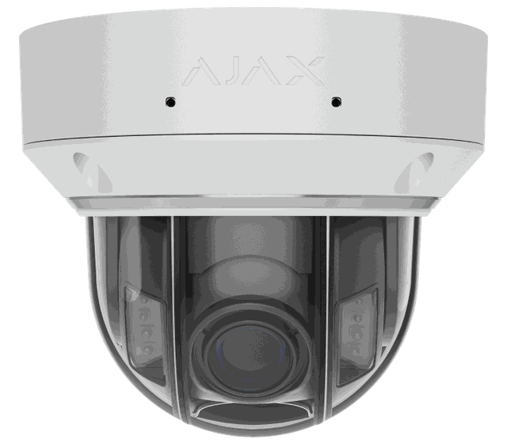
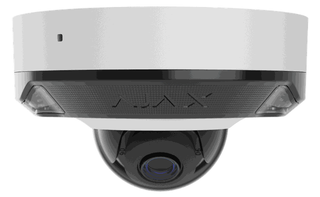
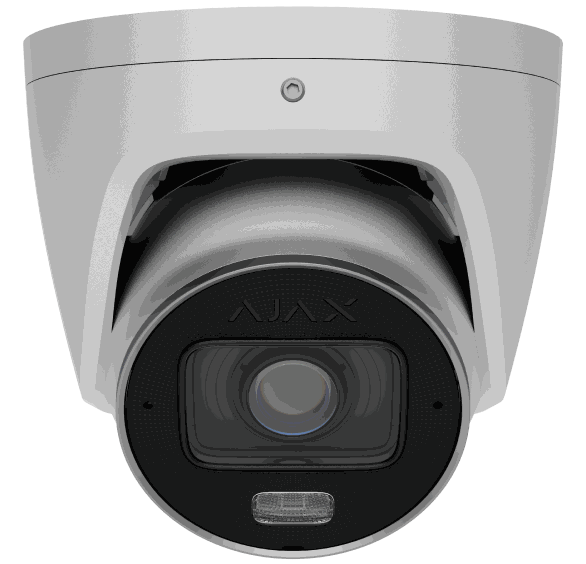
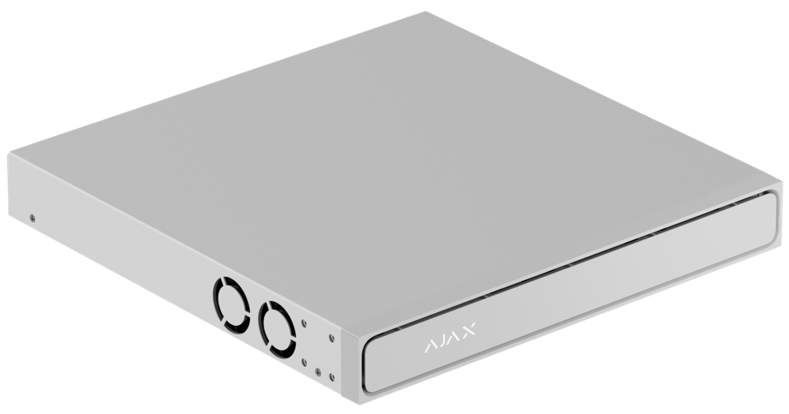

Catalogue
Vidéosurveillance
Caméras, sonnette et NVR Ajax Systems, intégrés à l’écosystème alarme, sur devis et installation AS974.

59 références













Aucune référence ne correspond à ces critères.
Besoin d’aide pour composer votre système ?
Étude gratuite · Partenaire agréé · Toute l’île · Intervention sur site.